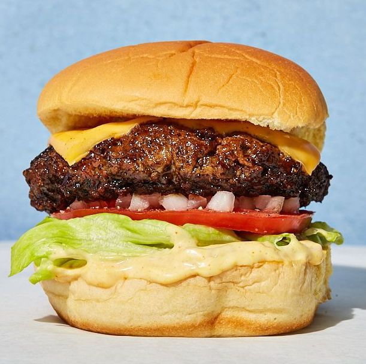

The perfect Basic Burger
These burger patties are made with ground beef and an easy bread crumb mixture. Nothing beats a simple hamburger on a warm summer evening. Pile these burgers with your favorite condiments and pop open a cool drink!
Need a basic burger recipe that you can whip up in no time? We have the perfect one. With just 5 ingredients and 15 minutes of cooking time, this flavorful recipe is ready to be shared, topped, and sauced in any way you like! Learn how to make your own sizzling beef burger patties right here.
Ingredients:
- 1 Large egg
- 1/2 teaspoon salt
- 1/2 teaspoon ground black pepper
- 1 pounf ground beef
- 1/2 cup fine dry bread crumbs
Steps:
- Preheat an outdoor grill for high heat and lightly oil grate.
- Whisk together egg, salt, and pepper in a medium bowl.
- Add ground beef and bread crumbs and mix with your hands or a fork until well blended.
- Form into four 3/4-inch-thick patties.
- Place patties on the preheated grill. Cover and cook 6 to 8 minutes per side, or to desired doneness.
- Serve hot and enjoy!
return to top|
|return to homepage